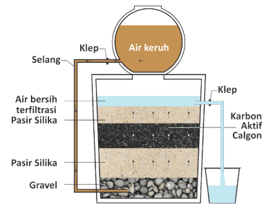
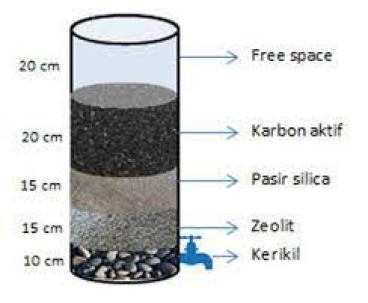

Pendekatan Pembelajaran dengan STEM
Sekarang, kita akan memperlajari lebih lanjut tentang hubungan Filtrasi Air tehadap Science,
Technology, Engineering dan Mathematics (STEM). Mari kita pelajari dengan seksama!
SCIENCE
Pembelajaran dalam pendekatan STEM bagian Science membahas eksperimen Identifikasi Pencemaran
air. Berikut contoh video eksperimen sederhana identifikasi pencemaran air:
Eksperimen 1 :
Eksperimen Identifikasi
Pencemaran air
TECHNOLOGY
Filtrasi Pasir
Filtrasi pasir adalah metode tradisional yang menggunakan lapisan pasir untuk menyaring
partikel dari air.

Proses:
Air mengalir melalui lapisan pasir yang bertindak sebagai filter mekanis, menahan partikel padat besar dan mikroorganisme.
Aplikasi:
Digunakan dalam instalasi penyediaan air bersih dan instalasi air minum.
Air mengalir melalui lapisan pasir yang bertindak sebagai filter mekanis, menahan partikel padat besar dan mikroorganisme.
Aplikasi:
Digunakan dalam instalasi penyediaan air bersih dan instalasi air minum.
Filtrasi Karbon Aktif
Menggunakan karbon aktif yang memiliki pori-pori sangat kecil untuk menyerap zat-zat kimia
dan bahan organik.

Proses:
Molekul-molekul pencemar ditarik dan diserap oleh karbon aktif.
Aplikasi:
Menghilangkan bau, rasa, dan zat kimia tertentu dari air minum
Molekul-molekul pencemar ditarik dan diserap oleh karbon aktif.
Aplikasi:
Menghilangkan bau, rasa, dan zat kimia tertentu dari air minum
ENGINEERING
Pembelajaran dalam pendekatan STEM bagian Engineering membahas tentang desain sistem filtrasi air
sederhana. Tujuan dari desain ini adalah untuk memberikan solusi yang mudah diimplementasikan dan
efektif dalam menyaring partikel dan mikroorganisme dari air. Berikut adalah contoh alat sederhana
filtrasi air.
Eksperimen 1 :
Penjernihan atau Penyaringan Air Sederhana
MATHEMATICS
Pembelajaran dalam pendekatan STEM bagian Matematika membahas tentang Perhitungan Efisiensi
Filtrasi: Dalam proses filtrasi, efisiensi filtrasi dapat dihitung untuk mengetahui seberapa
efektif sistem filtrasi dalam menyaring partikel dan mikroorganisme dari air1. Perhitungan ini
melibatkan penggunaan rumus matematika dan data numerik, seperti ukuran partikel, tekanan, dan
luas permukaan filtrasi.
Materi Pembelajaran :
Perhitungan Pressure Drop
Kumpulan Materi Pembelajaran
Video 1
Importance of Clean Water
Video 2
Engineer Implementation
Video 3
Science Implementation
Video 4
What is Filtration?